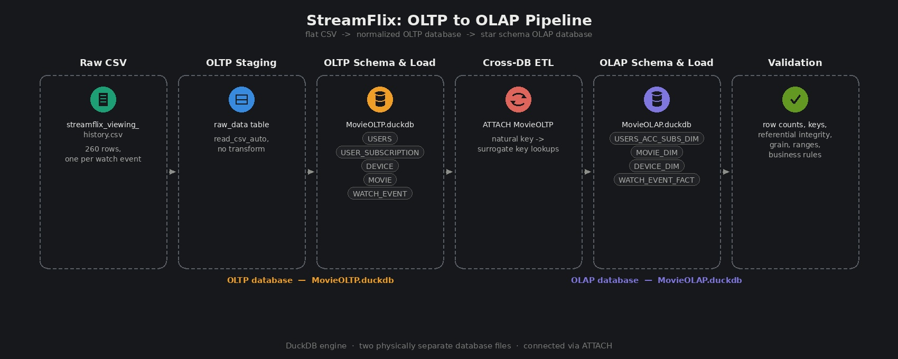

ELT Pipeline
StreamFlix Viewing Analytics: Raw data to OLTP to OLAP Dimensional Modeling
This project takes a flat, denormalized dataset of movie streaming viewing history and carries it through the full data engineering lifecycle: functional dependency analysis, normalization into an OLTP schema, and transformation into a star schema OLAP data warehouse. Unlike a single-schema exercise, this project maintains two separate, physically distinct databases: MovieOLTP and MovieOLAP, connected by an explicit ETL step that reads from one and writes into the other.
- SQL
- DuckDB
- Schema Design
- Data Modeling
- Data Warehousing